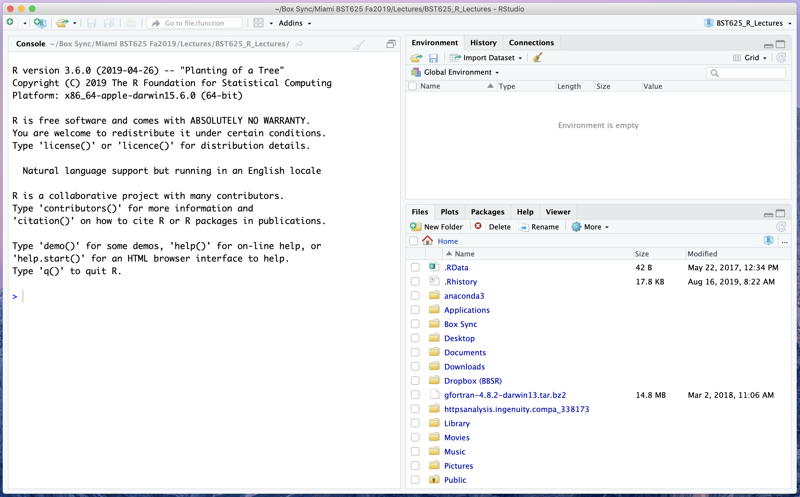

> "Hello, world!"Lesson 1: Overview of Data Science
Outline
We will cover the following:
- The Fear Factor
- The Syllabus
- What is Data Science?
- What is Reproducibility?
"Hello, World"
Reading, Videos, and Assignments
- Watch: https://www.youtube.com/playlist?list=PLHKz7LkI0oR3kJGDD7iv9heS8RdNtFA5R
- Read: Donoho (2017): https://doi.org/10.1080/10618600.2017.1384734
- Do: Confirm that you are using the most up-to-date versions of R and RStudio. Troubleshoot issues (and reach out to the instructor / TAs as necessary).
The Fear Factor
In my experience, most people struggle to learn computing because they are afraid of failure and wasting their time. Also, it doesn’t help that, over many years, the computer programming community has developed a reputation for being “hostile” or dismissive to newcomers.
In previous semesters, I’ve shown this (very gross) clip from the old television show, Fear Factor: https://youtu.be/zc6_UCgd4KU (WARNING: the above video has bugs in it, and may make some of you uncomfortable). Unlike the perfectly natural reaction to be afraid to eat spiders, I don’t want you to be afraid of this class, afraid of failure, or afraid to ask “dumb” questions. I do believe that there are actually some questions that are dumb (I used to say “there’s no such thing as a dumb question”, but I was wrong); however, I don’t want you to be afraid to ask the question, even if it is dumb.
Here is what we are not learning to do in this class:
https://www.youtube.com/watch?v=8F1Q6yETpfk. What we will learn is how to interact with your computer to help you do research. Computers are slaves to literal interpretation. Computers give you exactly what you ask for, but rarely what you actually want. We will hopefully learn how to write better requests of our computer so that we can get close to what we want.
Important
Computers give you what you ask for, not what you want.
The Syllabus
Please see the course syllabus on Canvas.
What is Data Science?
“Data science combines statistical methods, computational algorithms, and domain science information to extract knowledge and insights from big data, and to solve complex real-world problems.” - Wang, 2022
First of all, this is not an introductory course on data science; Instead, this is more akin to an Introduction to the Introduction to Data Science. However, we will still outline data science as a scientific discipline. There are six divisions of “Greater” Data Science (Donaho, 2017).
Data Preparation and Exploration
This is the portion of data science that deals with structuring your data appropriately (more on this later), exploratory data analysis, and data cleaning and preprocessing. For this part of data science, traditional statistics departments discuss only exploratory data analysis.
Examples: designing the questions on a patient survey, creating a database to hold clinical trials data, finding the most common answers to a question, finding the largest or smallest values of a measurement, reporting the proportion of missing answers to a battery of questions between three cohorts.
Data Representation and Transformation
This deals with retrieving data from databases or online repositories, changing and organizing the format of the data files, and using mathematical or logical transformations on recorded values. For this portion of data science, traditional statistics departments only discuss mathematical transformations and their validity.
Examples: extracting subject data from REDCap, building EMR reports, organizing hundreds or thousands of case report forms into a few data files, transforming age in months or weeks to age in years, grouping free-form text (“florida”, “Florida”, “fl”, and “FL” together).
Computing with Data
This part of data science concerns creating new programming languages, developing algorithms, using programming languages to automate data preparation, representation, and exploration, and packaging code for easier use. Of these, traditional statistics departments have only cared about algorithms (and sometimes not even that). However, many statisticians are starting to change their focus where this area is concerned. In this class you will learn parts of a few different computing and reporting languages, such as R, SQL, YAML, Markdown, and LaTeX.
Examples: the R language was created to give statisticians and data scientists more control over their research, algorithms to fit statistical and mathematical models are created all the time, and we can create “packages” of computer code to repeat the same types of analyses on new data sets.
Data Modeling
This part of data science is the most well-known portion. It is what most lay-people consider “data science”: statistical modelling and machine learning. This is where simple techniques like t-tests, linear regression, or ANOVA come in, but it also includes highly complex models and routines such as deep neural networks, random coefficient mixed models, support vector machines, or discriminant analysis. Traditional statistics departments have historically taught or developed most of these techniques, although some interesting modern research has come from computer science and econometrics.
Data Visualization and Presentation
This portion of data science includes all sorts of visualizations, from plots to interactive websites and applets. Data visualization itself is nice, but using computer code to generate these visualizations is of paramount importance. Without the data and code to create the visualization, it can not be reproducible. Furthermore, the presentation of data in order to further an argument or claim is part of visual rhetoric, and is subject to questions of ethics. In traditional statistics departments, some of these tools are used, but rarely taught.
Examples: making a scatterplot comparing SAT scores at different levels of household income, making a map shading counties in Florida by their ovarian cancer rates, designing a website to plot demographic information based on user selections.
Tip
“A picture is worth a thousand words. Make sure your picture says the right thousand words.”
Science about Data Science
This portion of data science involves research meta-analysis about the utility of statistical and computational tools across entire disciplines, including applying data science concepts in disciplines untouched by data science. Currently, this is an area of active research in data science itself. This portion of the discipline identifies the boundaries of the discipline itself, the proper and ethical uses for data science, and experiments with the best ways to teach data science concepts. As this section of data science deals with philosophy and ethics, it has hardly anything to do with academic statistics as the discipline has traditionally been taught.
Examples: apply machine learning to analyze the provenance of art owned by Jews that had been seized by the Nazis or by political dissenters that had been seized by the Soviets, creating online courses to teach the basics of data science and reproducible research to non-scientists, writing commentary on the ethics of misleading graphs and figures in political campaigns.
Reproducibility and Replicability
Two key definitions:
“Replicability: if we repeat a study with new data, the repetition should agree with the original results, or—at minimum—not refute the original study’s conclusions.”
“Reproducibility: if we repeat the same analysis with the same data, we should be able to reproduce the same published results.”
These definitions are still the subject to some considerable discussion, but these are the definitions we will use for this class.
The Reproducibility Crisis
Published bio-science is largely not reproducible:
- Oncology: 53 published articles tested, six successes (11%) (Nature, 2012)
- Psychology: 100 published articles, 39 successes (Nature News, 2015); 71 published articles tested, 92 replication attempts, 35 successes (38%; the PsychFileDrawer project is ongoing).
- Pharmacology: 67 published models tested, 14 successes (21%) (Nature Reviews, 2011)
The Ioannidis crusade
John Ioannidis, physician scientist at Stanford, speaks harshly against the lack of reproducibility and replicability in science:
Reproducible Data Science
Before reproducibility must come preproducibility.
“Instead of arguing about whether results hold up, let’s push to provide enough information for others to repeat the experiments … In computational science, ‘reproducible’ often means that enough information is provided to allow a dedicated reader to repeat the calculations in the paper for herself.” - Philip B. Stark, Professor of Statistics, UC Berkeley
Use Code!
If you want your analyses and figures to be reproducible, then you must use computer code to do this. Point-and-click software does not (usually) give you a record of your steps or allow you to repeat them. Building your data management, data modelling, and visualizations steps in a programming language means that you always have the tools necessary to repeat your work. In this class, you will learn how to write computer code to clean and transform your data, perform your analyses, and build the figures and tables for your papers. If you do this properly, this will ensure that anyone can recreate your analysis results, figures, and tables relatively quickly and painlessly.
"Hello, World"
Before we wrap up for the day, we need to write our first line of code in R. Here are the instructions to download and install R and RStudio, from the EdX help pages:
Downloading and Installing R
You should have completed these steps before getting to this lesson, but here they are again regardless.
For Windows
- Open an internet browser and go to https://www.r-project.org.
- Click the “download R” link in the middle of the page under “Getting Started.”
- Select a CRAN location (a mirror site) and click the corresponding link.
- Click on the “Download R for Windows” link at the top of the page.
- Click on the “install R for the first time” link at the top of the page.
- Click “Download R for Windows” and save the executable file somewhere on your computer (your desktop is fine, because you will delete this file later).
- Double-click on the
.exefile to “run” it and follow the installation instructions (click “Next” or “Allow” a bunch of times).
For Mac
- Open an internet browser and go to https://www.r-project.org.
- Click the “download R” link in the middle of the page under “Getting Started.”
- Select a CRAN location (a mirror site) and click the corresponding link.
- Click on the “Download R for (Mac) OS X” link at the top of the page.
- Click on the file containing the latest version of R under “Files.”
- Save the .pkg file (to your desktop; you will delete it at the end)
- Double-click the
.pkgfile to open, and follow the installation instructions (click “Next” or “Allow” a bunch).
Now that R is installed, you need to download and install RStudio.
Download and Install RStudio
For Windows
- Go to https://www.rstudio.com and click on the “Download RStudio” button.
- Click on “Download RStudio Desktop.”
- Click on the version recommended for your system, or the latest Windows version, and save the executable file (probably to your desktop, because we’re just going to delete it afterwards).
- Double-click on the
.exefile and follow the installation instructions (click “Next” or “Allow” a bunch of times).
For Mac
- Go to https://www.rstudio.com and click on the “Download RStudio” button.
- Click on “Download RStudio Desktop.”
- Click on the version recommended for your system, or the latest Mac version, and save the
.dmg(disk image) file on your computer (probably to your desktop, because we are just going to delete it later) - Double-click the
.dmgfile to open it, and then drag and drop it to your applications folder.
Check the Install
Whether the installation worked or not, you should delete the install files to clean up your computer. Hopefully you can find them easily (if you saved them to the desktop, they should be easy to find).
Find RStudio on your computer and open it. You should see a window that looks like this:

This application window is broken into three panes: the console pane (left half), the environment pane (top right quarter), and the file pane (bottom right quarter).
Our Very First R Code
In the console pane (on the left side of the screen), move your cursor to the prompt (the > symbol). Type (you don’t have to type the > symbol; it’s just there for reference)
You should see your welcome message displayed back to you. Congratulations! You have just executed your very first R code. Unfortunately, things get a touch more challenging after this, but that is why we are here: to learn.